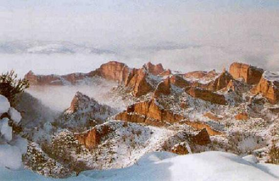
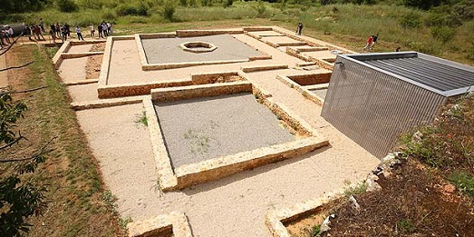

|
LAS MEDULAS

|
||||||||||||
El parque arqueológico de las Médulas es uno de los
restos mineros más importantes de la época romana. Los antiguos montes Medulios con el esfuerzo de los romanos por conseguir el preciado metal
dorado, se han convertido en este singular paisaje.
El poblado de Orellán esta asentado junto a una brecha ferruginosa de la que extraían el mineral para después fundirlo y posteriormente fraguar con el las herramientas empleadas en los trabajos de extracción del oro. La domus de Pedreiras de Lago, parece que estaba habitada por los romanos que se encargaban de la gestión y explotación del yacimiento. Data de los siglos I y II, cuenta con varias estancias en torno a un patio porticado, con pinturas murales de tipología clásica en parte de sus estancias. Foto: www.infobierzo.com

La mina de las Médulas se hizo sobre un yacimiento aluvial (secundarios), formado por limos, arenas y cantos rodados. Procede de otros yacimientos en roca (primarios), arrastrados y depositados por corrientes de agua durante el Mioceno, finales de la edad terciaria. Este yacimiento fue explotado desde finales del siglo I a.e.c. hasta finales del siglo II; era un yacimiento enorme y tenia una altura considerable, debido al espesor del aluvión; los romanos recurrieron al agua para poder explotar el yacimiento. Los romanos eran unos ingenieros excepcionales y tenían un poder sobre el agua inigualable. Para poder mover toda esa ingente cantidad de monte y poder eliminar la capa superficial, constituyeron ocho canales para traer el agua de los ríos Sil y Cabrera. Así a través de embalses, con compuertas y canales secundarios, iban poco a poco derrumbando el monte, lavándolo para obtener el preciado oro. Para la obtención del oro, utilizaban unos dos millones de metros cúbicos al año, así durante unos doscientos años que duró la explotación. Posiblemente sea la red hidráulica más grande del mundo romano, unos trescientos treinta kilómetros de canales llamados corrugios. Así llamados porque iban serpenteando las vertientes norte y sur de los montes Aquilianos para poder captar en agua de las cumbres de los ríos del Bierzo; algunas a más de dos mil metros de altura y a unos cien kilómetros de distancia. Se calcula que se extrajeron de 5 a 7 toneladas de oro. La mano de obra necesaria era de 2.500 a 5.000 trabajadores, la mayoría astures, que obtenían por su duro trabajo, bienes y servicios; y esclavos africanos. Para las mediciones topográficas utilizaban la dioptrae, taquímetro utilizado para calcular las distancias y sacar los niveles, ayudándose con el chorobates, una especie de regla cuadrada de madera de unos veinte pies (5.920mm). Otras herramientas utilizadas eran la punterola, la batea y la lucerna. El desnivel obtenido en los canales no superaba el 0.5% por kilómetro; la anchura del canal era de 90 a 150 cm y la altura del agua transportada era de 10 a 20cm. La orografía les causo grandes problemas, tuvieron que excavar en la roca túneles para transportar el agua y también se vieron obligados a demoler rocas. Para demoler una roca, la calentaban quemando en su superficie grandes cantidades de brezo y a continuación derramaban encima agua mezclada con sal y vinagre, con lo que la roca estallaba y se iba desquebrajando.
Los agogae o lavaderos. El proceso de lavado, se realizaba en el llano, excavaban zanjas en el suelo, por las que discurría el agua y en intervalos las cubrían con urces o brezo; los laterales de las zanjas estaban cubiertos con tablas y si el terreno lo requería utilizaban canales aéreos. El agua dejaba en los filtros vegetales la mena de oro. El proceso finalizaba secando y quemando el brezo, cuyas cenizas se lavaban sobre un cauce de césped herboso para que se depositara el oro.
Por el proceso de extracción empleado dio lugar a diversos canales, que eran empleados para la evacuación de estériles, sobretodo cuando la extracción se realizada en cotas superiores, come se aprecia en el paraje llamado Lagua D´Eres.
La ruina montiun, era el sistema de derrumbe llamado así por Plinio el Viejo, que era utilizado en los montes Medulio, donde las capas más ricas de conglomerado aurífico se encontraban en la parte inferior del monte. El sistema estaba basado en dos técnicas: primero se excavaba galerías, para debilitar el sector de monte que deseaban derrumbar; después el agua irrumpía con fuerza y al inundar las galerías, comprimía el aire y este actuaba como un ariete y demolía la zona acotada.
Si utilizaba este sistema, excavaban unos canales, que eran abastecidos por un canal principal que abastecía de agua los surcos o canales que a su vez iban lavando el monte y transportaban el conglomerado aurífico hasta los lavaderos situados en la parte baja. Otro método de extracción era mediante canales de lavado por presión.
|